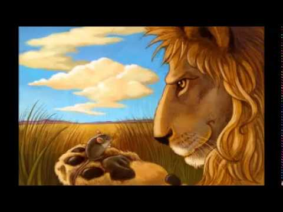

le lion et la souris
Un Lion fatigué de la chaleur, et abattu de lassitude, dormait à l'ombre d'un arbre. Une troupe de Rats passa par le lieu où le Lion reposait ; ils lui montèrent sur le corps pour se divertir. Le Lion se réveilla, étendit la patte, et se saisit d'un Rat, qui se voyant pris sans espérance d'échapper, se mit à demander pardon au Lion de son incivilité et de son audace, lui représentant qu'il n'était pas digne de sa colère. Le Lion touché de cette humble remontrance, lâcha son prisonnier, croyant que c'eût été une action indigne de son courage de tuer un animal si méprisable et si peu en état de se défendre. Il arriva que le Lion courant par la forêt, tomba dans les filets des chasseurs ; il se mit à rugir de toute sa force, mais il lui fut impossible de se débarrasser. Le Rat reconnut aux rugissements du Lion qu'il était pris. Il accourut pour le secourir, en reconnaissance de ce qu'il lui avait sauvé la vie. En effet, il se mit à ronger les filets, et donna moyen au Lion de se développer et de se sauver.
